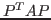

Next: About this document ...
Jacob B. Schroder
Theoretical Advances Regarding Non-Galerkin Coarse-Grid Operators for Algebraic Multigrid
Center for Applied Scientific Computing
Lawrence Livermore National Laboratory
Box 808
L-561
Livermore
CA 94551-0808
schroder2@llnl.gov
Robert D. Falgout
Eran Treister
Algebraic multigrid (AMG) is a popular and effective solver for systems
of linear equations that arise from discretized partial differential
equations. While AMG has been effectively implemented on large scale
parallel machines, challenges remain, especially when moving to exascale.
In particular, stencil sizes (the number of nonzeros in a row) tend to
increase further down in the coarse grid hierarchy and this growth leads
to more communication. Thus, as problem size increases and the number of
levels in the hierarchy grows, the overall efficiency of the parallel AMG
method decreases, sometimes dramatically. This growth in stencil size is
due to the standard Galerkin coarse grid operator,

, where  is the prolongation (i.e., interpolation) operator. For example, the
coarse grid stencil size for a simple 3D 7-point finite differencing
approximation to diffusion can increase into the thousands on present day
machines, causing an associated increase in communication costs. Previous
work by the authors has successfully truncated coarse grid stencils in an
algebraic fashion. First, the sparsity pattern of the non-Galerkin coarse
grid is determined by employing a heuristic minimal ``safe'' pattern
together with strength-of-connection ideas. Second, the nonzero entries
are determined by collapsing the stencils in the Galerkin operator using
traditional AMG techniques. The purpose of this talk is to provide some
theoretical foundation for the method. In particular if the original
two-grid Galerkin method is optimal for M-matrices, then the two-grid
non-Galerkin method is shown to also be optimal. The impact of the theory
on the algorithm, together with supporting serial and parallel results
will also be given.
is the prolongation (i.e., interpolation) operator. For example, the
coarse grid stencil size for a simple 3D 7-point finite differencing
approximation to diffusion can increase into the thousands on present day
machines, causing an associated increase in communication costs. Previous
work by the authors has successfully truncated coarse grid stencils in an
algebraic fashion. First, the sparsity pattern of the non-Galerkin coarse
grid is determined by employing a heuristic minimal ``safe'' pattern
together with strength-of-connection ideas. Second, the nonzero entries
are determined by collapsing the stencils in the Galerkin operator using
traditional AMG techniques. The purpose of this talk is to provide some
theoretical foundation for the method. In particular if the original
two-grid Galerkin method is optimal for M-matrices, then the two-grid
non-Galerkin method is shown to also be optimal. The impact of the theory
on the algorithm, together with supporting serial and parallel results
will also be given.
Next: About this document ...
Copper Mountain
2014-02-23